A regular Sturm-Liouville problem on ![\([a,b]\)](m/0a90b3bc64f7c9d00490784b86efd520680b7522.svg) is
is
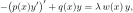
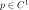
,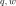
continuous,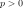
and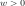
on, together with separated boundary conditions
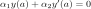
and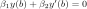
, the pairs not both zero. A for which a non-zero solution exists is an eigenvalue and
the solution an eigenfunction. The relevant inner product is
for which a non-zero solution exists is an eigenvalue and
the solution an eigenfunction. The relevant inner product is
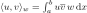
.Write
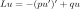
. For of class
of class  satisfying
the boundary conditions,
, where
satisfying
the boundary conditions,
, where
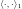
is the unweighted inner product; that is, is symmetric.
is symmetric.
Integrating by parts twice,
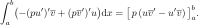
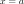
the boundary conditions say that the vectors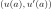
and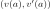
both lie in the line annihilated by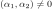
, hence are proportional, so the determinant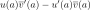
vanishes; likewise at . The
. The  terms cancel, being symmetric.
terms cancel, being symmetric.
The eigenvalues of a regular Sturm-Liouville problem are real, eigenfunctions for distinct eigenvalues are orthogonal for
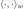
, and each eigenvalue has a one-dimensional eigenspace.Let
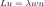
with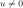
. By the lemma,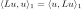
, that is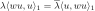
; since the common factor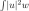
is positive, so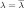
.For and
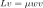
with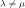
, the same identity gives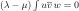
, hence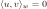
.
For the multiplicity, two eigenfunctions for the same both
satisfy the same second-order linear equation and the boundary condition
at  , which fixes
, which fixes
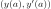
up to a scalar; by uniqueness for the initial value problem they are proportional.The problem
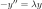
on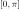
with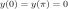
is regular, its eigenvalues are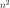
for , and its eigenfunctions
, and its eigenfunctions 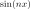
form an orthogonal system in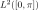
.Take
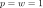
and , all admissible. For
, all admissible. For 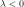
or the general solution is a combination of real exponentials or an affine function, and the two boundary conditions force it to vanish. For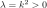
the general solution is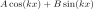
;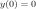
gives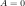
, and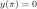
gives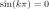
, that is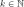
. Orthogonality is the previous theorem, and it also follows from the computation for the trigonometric system.
What is proved here is the algebraic half: symmetry gives real
eigenvalues, orthogonality and simplicity. The analytic half – that the
eigenvalues form an increasing sequence tending to infinity and that the
eigenfunctions are complete in  – is the substantial theorem
and is not proved in this archive; it follows from compactness of the
inverse operator and the spectral theorem for compact self-adjoint
operators, neither of which is written yet. Completeness is what a
separation-of-variables argument silently uses when it claims the
resulting series solves the problem.
– is the substantial theorem
and is not proved in this archive; it follows from compactness of the
inverse operator and the spectral theorem for compact self-adjoint
operators, neither of which is written yet. Completeness is what a
separation-of-variables argument silently uses when it claims the
resulting series solves the problem.